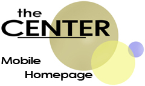

Here is a list of links to more information, designed specially for mobile browsing
1
Center Mobile Home
2
Coming Events
3
Food and Drink Menu
4
About the Center
5
Links of Interest
6
ReNew
7
Ways to Contact Us
Main Site
©2010 The Center